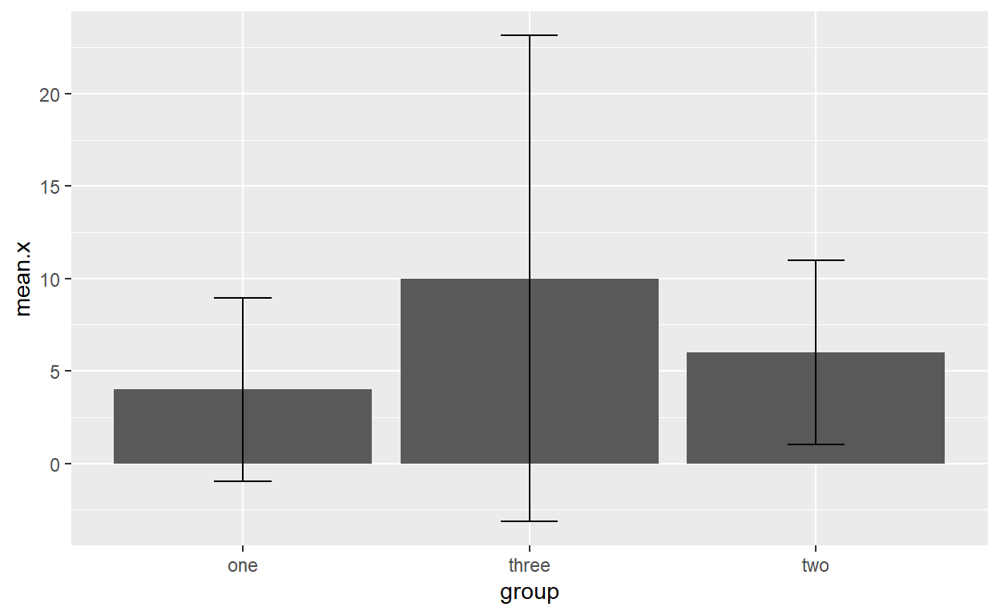

One Factor ANOVA
Overview
This tutorial focuses on the one factor ANOVA.
The PowerPoint slides for the presentation in the videos are on Canvas if you want a standalone copy.
The videos (as well as others) can also be found on my YouTube channel https://www.youtube.com/channel/UC5kDZTyHZlgSgSEa3YQXOi
Learning Objectives
Define between subjects and within subjects
Explain the conditions for applying the One Factor ANOVA
Compute Sums of Squares, degrees of freedom, Mean Square, and F
Given a problem, define the null and alternative hypotheses
Apply the above procedures to making decisions about null hypotheses
Describe and calculate eta-squared as a measure of effect size
Understand the equivalence of ANOVA and linear regression
Use R to compute ANOVA and eta-squared
Tell all your friends about Sums of Squares
Apply multiple comparison tests
Compute Bayes Factor statistics for ANOVA
Data
covid1F is the datafile used in exercises. These data examine the effectiveness of several interventions designed to increase social distancing.
Leary, A., Dvorak, R., Leon, A. D., Peterson, R., & Troop-Gordon, W. (2020). COVID-19 Social Distancing. PsyArXiv. https://do0i.org/1.31234/osf.io/mszw2
The datafile includes the variables political (political orientation), group (intervention group), Beliefs (COVID beliefs), and SD (social distancing behaviors)
Packages
This tutorial uses the following new packages:
lsrfor effect sizescarfor ANOVA computationsBayesFactorfor … now what do you think it is for?ggplot2for graphingDescToolsandmultcompfor multiple comparisonsdplyrfor data manipulation
Video 1 Introduction to ANOVA
Video 1: Introduction
Picture made by Ernesto Aberson, tech wiz kid.
Quiz 1
Video 2 One Factor ANOVA Calculations
Exercise
\(\large SS_{Total}=\Sigma(x-\bar{x}_t)^2\)
\(\large SS_{Between}=\Sigma n_j(\bar{x}_j-\bar{x}_t)^2\)
\(\large SS_{Within}=\Sigma(x-\bar{x}_j)^2\)
| group | x |
|---|---|
| one | 2 |
| one | 4 |
| one | 6 |
| two | 4 |
| two | 6 |
| two | 8 |
| three | 6 |
| three | 8 |
| three | 16 |
Exercise 2 More Calculations
\(SS_{Total}=132\)
\(SS_{Between}=56\)
\(SS_{Within}=76\)
\(df_{Between}=2\)
\(df_{Within}=6\)
\(\large MS_{Between}=\frac{SS_{Between}}{df_{Between}}\)
\(\large MS_{Within}=\frac{SS_{Within}}{df_{Within}}\)
\(\large F = \frac{MS_{Between}}{MS_{Within}}\)
\(\large \eta^2=\frac{SS_{Between}}{SS_{Total}}\)
Video 3 Multiple Comparison Tests
Quiz
Video 4 R Examples
Exercise 4
The code below demonstrates how to run a one factor ANOVA using a dataset called xx with variables group and x. These are the values you used earlier for hand calculations. The first command runs the ANOVA and captures it in an object called ex1. The lsr::etasquared command uses the object that holds the ANOVA results. Next, I demonstrate the DescTools and multcomp for multiple comparisons and also demonstrate orthogonal contrasts. Please note that you typically would select only one method for comparisons.
Notes: lsr is fussy. If the variables are not factor and numeric, you will get an error. multcomp also has some fussiness that I’ll get into below.
ex1<-aov(xx$x~xx$group)
summary(ex1)## Df Sum Sq Mean Sq F value Pr(>F)
## xx$group 2 56 28 2.333 0.178
## Residuals 6 72 12lsr::etaSquared(ex1)## eta.sq eta.sq.part
## xx$group 0.4375 0.4375tapply(xx$x, xx$group, mean)## one three two
## 4 10 6tapply(xx$x, xx$group, sd)## one three two
## 2.000000 5.291503 2.000000Exercise
Using the covid1F data, examine social distancing behaviors (SD) by intervention (group). The intervention conditions are Personalized Normative Influence (PNF) - participation give an estimate of % of people that engage in social distancing, they are then given an estimate that is larger than theirs as an indication of the prevalence. Direct Normative Theory 1 – Participants who give an answer of less than 50% received feedback on the positive aspects of those who practice social distancing. Those who give an answer of less than 50% receive feedback on the negative aspect of those who do not practice distancing. Direct Normative Theory 2 – Same as DRT1 but based on answer to a 1-8 scale. Control received no intervention.
Be sure to get an effect size and descriptive statistics.
ex1<-aov(covid1F$SD~covid1F$group)
summary(ex1)
lsr::etaSquared(ex1)
tapply(covid1F$SD,covid1F$group, mean)
tapply(covid1F$SD,covid1F$group, sd)Quiz
## Df Sum Sq Mean Sq F value Pr(>F)
## covid1F$group 3 826 275.3 2.466 0.0619 .
## Residuals 385 42995 111.7
## ---
## Signif. codes: 0 '***' 0.001 '**' 0.01 '*' 0.05 '.' 0.1 ' ' 1## eta.sq eta.sq.part
## covid1F$group 0.01884986 0.01884986## Control DRT1 DRT2 PNF
## 90.60417 88.33333 86.93000 88.92683## Control DRT1 DRT2 PNF
## 8.895051 10.892436 12.539437 10.397982Multiple Comparison Tests and Bayes Factors
multcomp and DescTools provide just about all the multiple comparison tests we need.
DunnettTest is a command from DescTools. The structure is pretty similar to other aspects of the ANOVA except we need to explicitly select the control group. I like this better than the multcomp command as that specification allows greater flexibility.
DescTools::DunnettTest(x~group,data=xx, control="one")##
## Dunnett's test for comparing several treatments with a control :
## 95% family-wise confidence level
##
## $one
## diff lwr.ci upr.ci pval
## three-one 6 -2.106194 14.10619 0.1323
## two-one 2 -6.106194 10.10619 0.7162
##
## ---
## Signif. codes: 0 '***' 0.001 '**' 0.01 '*' 0.05 '.' 0.1 ' ' 1For the Tukey test, we can use multcomp. This package is a little fussy. First we need an analysis object. Inside the mcp command we place the name of the factor and then “Tukey” to specify the command. The fussy part is this - for some commands in multcomp, if you use data\(variable~data\)variable when you run the ANOVA, you get an error. It took me months to figure that issue out. Another is that using multcomp::command seems to work only intermittently.
xxxx<-aov(x~group, data=xx)
library(multcomp)## Loading required package: mvtnorm## Loading required package: survival## Loading required package: TH.data## Loading required package: MASS##
## Attaching package: 'MASS'## The following object is masked from 'package:dplyr':
##
## select##
## Attaching package: 'TH.data'## The following object is masked from 'package:MASS':
##
## geysertukey<-glht(xxxx,linfct=mcp(group="Tukey"))
summary(tukey)##
## Simultaneous Tests for General Linear Hypotheses
##
## Multiple Comparisons of Means: Tukey Contrasts
##
##
## Fit: aov(formula = x ~ group, data = xx)
##
## Linear Hypotheses:
## Estimate Std. Error t value Pr(>|t|)
## three - one == 0 6.000 2.828 2.121 0.165
## two - one == 0 2.000 2.828 0.707 0.768
## two - three == 0 -4.000 2.828 -1.414 0.392
## (Adjusted p values reported -- single-step method)Finally, for orthogonal contrasts, in this case 2 and 3 vs. 1 and then 2 vs. 3, we need to specific our contrast coding first. I placed that in an object called “mat.”
mat<-rbind("1 vs 2 and 3"=c(2,-1,-1),
"2 vs. 3"=c(0, 1, -1))
orthog<-multcomp::glht(xxxx,linfct=mcp(group=mat))
summary(orthog)##
## Simultaneous Tests for General Linear Hypotheses
##
## Multiple Comparisons of Means: User-defined Contrasts
##
##
## Fit: aov(formula = x ~ group, data = xx)
##
## Linear Hypotheses:
## Estimate Std. Error t value Pr(>|t|)
## 1 vs 2 and 3 == 0 -8.000 4.899 -1.633 0.269
## 2 vs. 3 == 0 4.000 2.828 1.414 0.354
## (Adjusted p values reported -- single-step method)Exercise Multiple Comparisons
Using the covid1F dataset perform a multiple comparison test that compares each intervention to the control group. Note that there is some difference of opinion on the use of multiple comparison tests in this situation. Some researchers argue that you would never conduct multiple comparisons unless the ominbus test (the F) was statistically significant (i.e., you could reject the null). However, another school of thought (that I happen to agree with) is that if you have a priori predictions about different treatments that you should perform the multiple comparison tests.
DescTools::DunnettTest(SD~group,data=covid1F, control="control")Video 5: APA Style
Graphing Approaches
Graphing with confidence interval error bars can appear challenging, but once you have a working example, you can simply modify it. For the CI, we first summarize our data. This creates a new data file where we calculate the CIs. Once we have calculated the CI, we can graph it.
The first set of commands use function from dplyr. We are creating an object called yy. The command xx %>% passes the name of the dataset to the commands that follow.
group_by(group) tells R to group your variables using the variable called “group”.
summarise mean.x, etc. is creating summary statistics.(it is spelled funny because the package author is from New Zealand).
The mutate command calculates a new variable that captures the standard error.
The lower.ci and upper.ci statements calculate the limits of the confidence interval.
In the ggplot command, we provide the name of the datafile (yy), what goes on each axis, and finally the ci values. The rest does not need modification
yy<-xx %>%
group_by(group) %>%
summarise(mean.x = mean(x, na.rm = TRUE),
sd.x = sd(x, na.rm = TRUE),
n.x = n()) %>%
mutate(se.x = sd.x / sqrt(n.x),
lower.ci.x = mean.x - qt(1 - (0.05 / 2), n.x - 1) * se.x,
upper.ci.x = mean.x + qt(1 - (0.05 / 2), n.x - 1) * se.x)
ggplot(yy, aes(x=group, y=mean.x)) +
geom_bar(position=position_dodge(), stat="identity") +
geom_errorbar(aes(ymin=lower.ci.x, ymax=upper.ci.x),
width=.2,
position=position_dodge(.9))
Exercise
Adapt the code found above to create a similar graph for your covid1F analyses.
We’ll do this in two steps. First, summarize the data.
yy<-covid1F %>%
group_by(group) %>%
summarise(mean.SD = mean(SD, na.rm = TRUE),
sd.SD = sd(SD, na.rm = TRUE),
n.SD = n()) %>%
mutate(se.SD = sd.SD / sqrt(n.SD),
lower.ci.SD = mean.SD - qt(1 - (0.05 / 2), n.SD - 1) * se.SD,
upper.ci.SD = mean.SD + qt(1 - (0.05 / 2), n.SD - 1) * se.SD)Now, make the graph
ggplot(yy, aes(x=group, y=mean.SD)) +
geom_bar(position=position_dodge(), stat="identity") +
geom_errorbar(aes(ymin=lower.ci.SD, ymax=upper.ci.SD),
width=.2,
position=position_dodge(.9))Bayes Factor
The Bayes Factor statistic is pretty straightforward.
anovaBF(x~group, xx)## Bayes factor analysis
## --------------
## [1] group : 1.003174 ±0.01%
##
## Against denominator:
## Intercept only
## ---
## Bayes factor type: BFlinearModel, JZSRecall the rough guide to interpreting BF:
BF< 0 Negative (supports opposite direction)
0-3 Anecdotal
3-10 Substantial
10-30 Strong
30-100 Very Strong
100 + Decisive
Exercise
Adapt the code above to the analyses we’ve carried out in the previous exercises.
anovaBF(SD~group,covid1F)Fun Fact!
%>% is called a pipe. It was developed initially for the magrittr package which is named after the French Painter Rene Magritte (pictured below).

This is a famous painting by the artist.

Which inspired the magrittr sticker design.